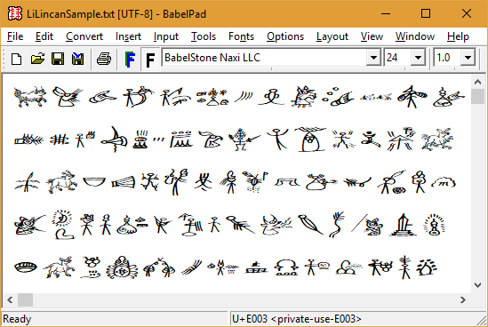

BabelStone Naxi LLC is a scan font covering 2,162 glyphs for the Naxi Dongba (Naxi Tomba) script (纳西东巴文). The glyphs are derived from Lǐ Líncàn's 李霖灿 Nàxīzú xiàngxíng biāo yīn wénzì zìdiǎn 纳西族象形标音文字字典 [Naxi Pictographic Symbols Dictionary] (Kunming: Yunnan minzu chubanshe, 2001) [ISBN 7-5367-2126-9]. The 2,120 glyphs at E000..E849 are the main entries in the dictionary, and the 42 glyphs at F000..F029 are variant glyphs for some of the main entries.
A list of characters in the BabelStone Naxi LLC font is provided as an Excel spreadsheet Naxi.xlsx.
